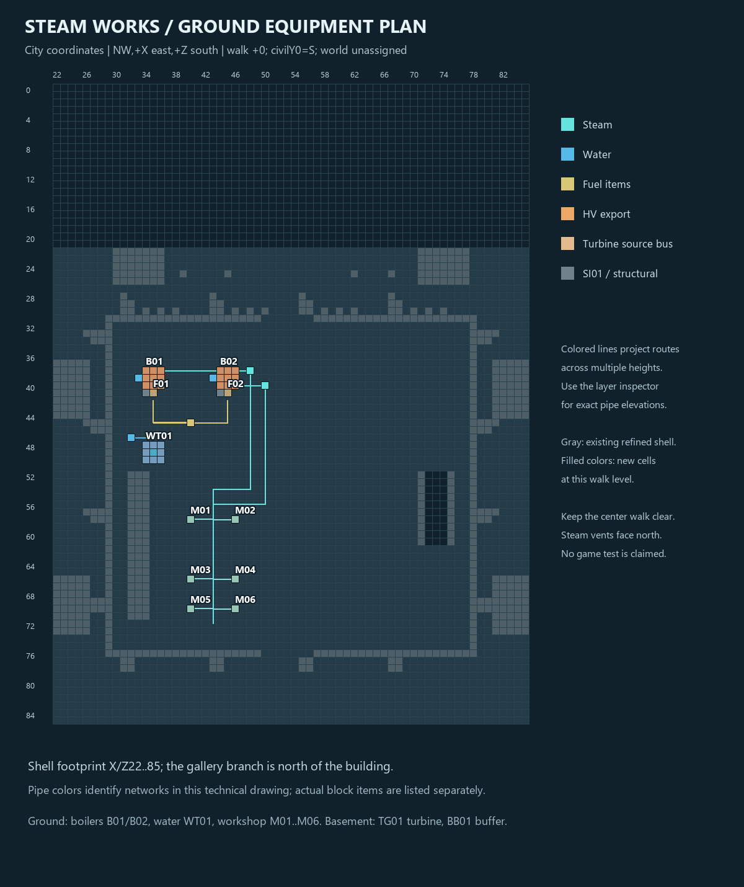
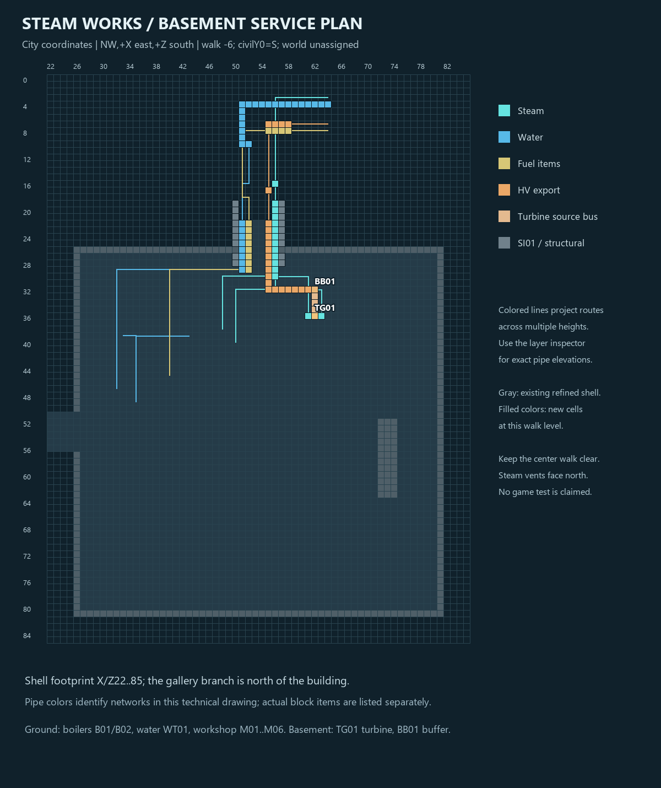
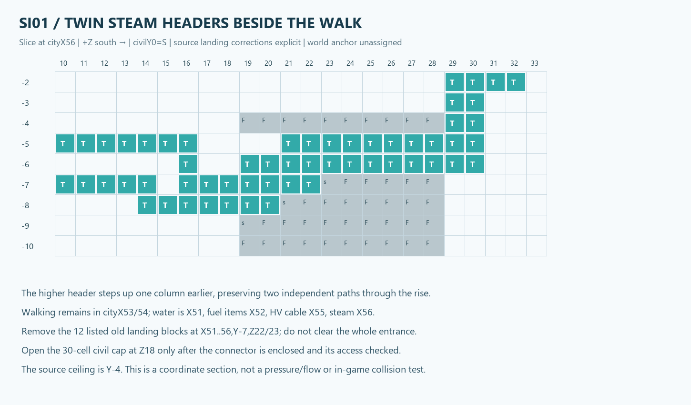

STEAM WORKS / UTILITY PLAN 01 / GTNH 2.9.2
Steam Works.
Connected to the city.
Your Railcraft high-pressure plant, six-machine steam workshop and service-gallery connection, planned against the current refined Steam Hall.
2 × 36 HPSolid-fuel boiler bays
576,000 LLocal water buffer
6Steel steam machines
1,052New occupied positions
Design basis: two maximum-size solid-fuel boilers, commission one first. Two 36-HP solid-fuel boilers confirmed. NW city origin · +X east · +Z south · civil Y0 = future surface S. World anchor/S/rotation unassigned. Game tests and upstream supply commissioning remain open.
01 / READ THE CONNECTION
Two steam headers. A clear walking lane.

Ground plant and workshop
B01/B02 are complete 3×3×5 Railcraft assemblies. Water WT01 supplies both. M01..M06 have explicit steam feeds, north vents and south operator positions.
Open full drawing
Basement and gallery
The HV turbine and battery buffer sit close to the gallery. Five service contracts identify water, two steam headers, HV export and fuel insertion.
Open full drawing
Use the refined 01-01 shell. Its basement walk is −6. This service interface does not fit the older Steam Works-v2 basement at −7. The patch removes exactly 30 cap bricks, 12 old entrance landing bricks and 7 riser pavers; the source models remain preserved.
02 / BLOCK-BY-BLOCK UTILITY LAYERS
Inspect the item, height and connection faces.
Gray: existing shell contextColored letters: new positionsRed X: exact removal patchBlueprint colors identify networks
Every added position · Exact removals · All pipe/cable face settings · Single source model · Current layer text